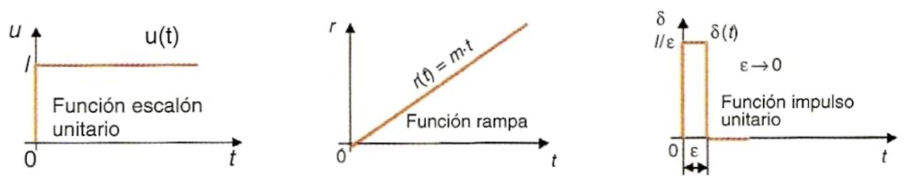
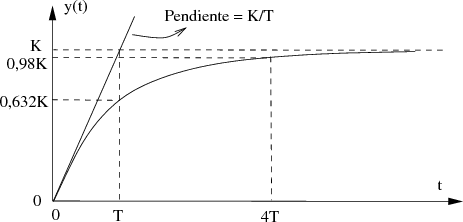
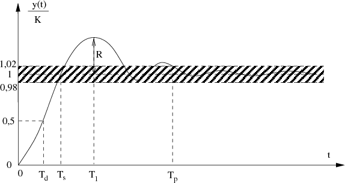
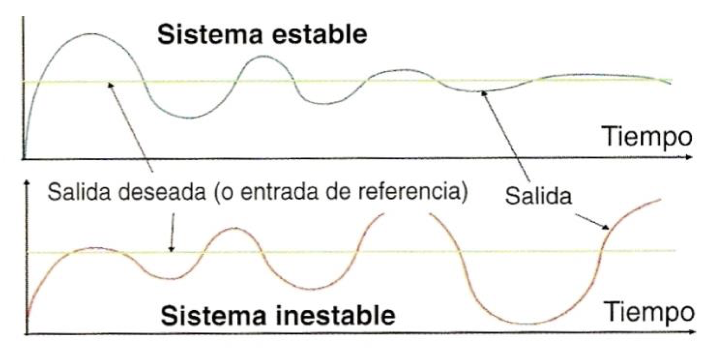
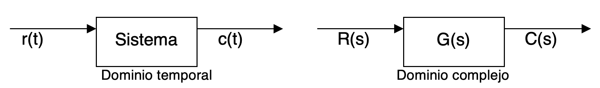
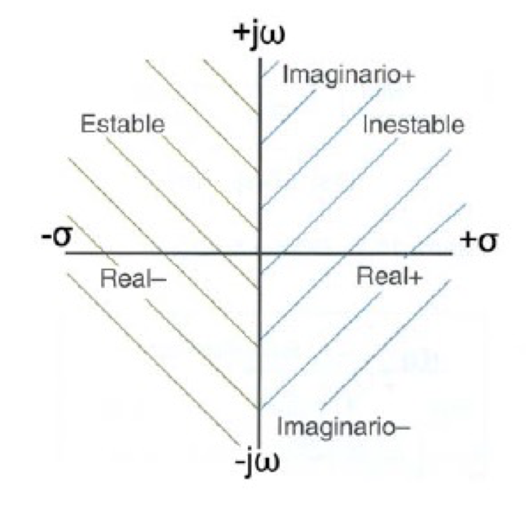

Especificaciones de diseño
Cuando diseñamos un sistema de control hay tres especificaciones básicas que debemos establecer:
Respuesta transitoria
Es la respuesta que da el sistema cuando inicia su funcionamiento en los primeros instantes de tiempo. Como ya hemos comentado, la salida del sistema deberá seguir lo más fielmente posible a la señal de referencia. Esta señal de referencia puede modelarse matemáticamente mediante diversas funciones ideales:
- Función escalón: representa una puesta en marcha brusca. Por ejemplo, al dar a un interruptor o al botón inicio.
- Función rampa: representa un cambio gradual del valor de la referencia. En concreto, sería una variación lineal. Si se esperara una variación diferente, habría que utilizar funciones cuadráticas, cúbicas, etc.
- Función impulso unitario: sirve para modelar una perturbación breve, como un impacto. También llamada delta de Dirac. El área encerrada entre la función y el eje de tiempos es 1, de ahí el nombre de unitario.
A continuación, se representan estas tres funciones básicas:

La respuesta transitoria de un sistema real nunca puede ser idéntica a la referencia que debe seguir, pues necesitaría reaccionar de forma instantánea, sin ningún tipo de retardo o inercia, lo que es imposible. El estudio de esta respuesta es complejo y queda fuera del alcance de bachillerato. Aquí simplemente vamos a exponer los dos tipos de respuesta transitoria que se pueden obtener al someter a un sistema a una entrada en escalón:
Sistemas de primer orden: el sistema va subiendo poco a poco hasta acercarse a la referencia:

Otros sistemas de control: el sistema sube rápidamente pero se pasa, teniendo que volver y repitiendo varias oscilaciones hasta estabilizarse en el valor de referencia:

Error en régimen permanente
Se define como la diferencia o discrepancia entre el valor de referencia y el valor de la salida una vez alcanzado el equilibrio, es decir, cuando ha transcurrido un tiempo suficiente para que la respuesta transitoria haya variado.
Este error, en un sistema en lazo cerrado, lo obtenemos a la salida del comparador. En un sistema de lazo abierto, no podemos conocerlo en tiempo real.
Lo que queremos al regular el sistema es conseguir que el error valga cero. En este momento la acción de control habrá llegado a su fin. En la realidad, hay sistemas en los que nunca vamos a obtener un error completamente nulo, por lo que definiremos un error máximo aceptable y, cuando lo hayamos alcanzado, ya podremos cesar la acción de control. Este error máximo aceptable es el error en régimen permanente del sistema de control.
Estabilidad
Muchas veces, si queremos reducir el tiempo de respuesta, podemos llevar a la variable controlada a una variación de tipo oscilatorio en torno a un valor concreto, ya que sobre-reaccionamos. Si este fenómeno oscilatorio desaparece pasado un tiempo, el sistema será estable. Si no es así (si existe una oscilación mantenida de amplitud creciente), el sistema será
inestable. Estas dos posibilidades se ilustran en las siguientes imágenes:

Habría un tercer caso, en que la oscilación ni desaparece ni se amplifica, sino que se mantiene todo el tiempo igual. En ese caso diríamos que el sistema es críticamente estable, aunque es un comportamiento que habitualmente tampoco es deseado.
La estabilidad es la especificación más importante que debe cumplirse entre los requerimientos a la hora de diseñar un sistema de control. Sin estabilidad, las otras dos especificaciones, respuesta transitoria y error en estado estable, son irrelevantes.
El estudio de la estabilidad de los sistemas de control se realiza matemáticamente a partir de la función de transferencia del sistema, pero queda fuera del alcance de este curso.
Función de transferencia
En los sistemas de regulación resulta fundamental conocer cuál va a ser su respuesta ante una entrada determinada. El problema es que, los sistemas físicos, evolucionan variando sus magnitudes con el tiempo, por lo que las ecuaciones matemáticas que utilizamos para modelarlos son ecuaciones diferenciales o integrales. Muchas veces es prácticamente imposible resolver estas ecuaciones para obtener una relación que permita conocer en función del tiempo como va a responder el sistema ante un
estímulo determinado.
Para unificar el tratamiento teórico de sistemas tan dispares como pueden ser un vehículo espacial, una central térmica, etc, se utilizan unas herramientas matemáticas que nos simplifican los cálculos. Una de esas herramientas se basa en reemplazar funciones de una variable real (tiempo, distancia...) por otras funciones que dependen de una variable compleja (s = σ + ωj, donde \(j=\sqrt{-1}\)). Al hacer esta transformación, las derivadas y las integrales se convierten en polinomios, por lo que las ecuaciones son mucho más fáciles de resolver. Esta herramienta se denomina transformada de Laplace, y es básica en el diseño de sistemas de control, aunque queda fuera del alcance de este curso. Solo por si tienes curiosidad, te dejo la expresión matemática para calcular la transformada de Laplace de una función temporal f(t) cualquiera:
| \[\mathcal{L}[f(t)]=F(s)=\int_{0}^{\infty }e^{-st}f(t)dt\] |
Una vez conocido el comportamiento del sistema en el dominio complejo, se puede pasar de nuevo al dominio del tiempo usando la antitransformada de Laplace y de esta manera establecer cuál va a ser la respuesta real en cualquier situación.

Según el método de Laplace, si son conocidas las relaciones reales entrada-salida de cada uno de los bloques, pueden deducirse otras relaciones entrada-salida para los mismos en el dominio de Laplace, denominadas funciones de transferencia (FDT).Podemos definir la función de transferencia como la relación entre la salida de un sistema y su entrada, expresadas en el dominio de la variable compleja de Laplace. Por lo tanto, podemos establecer una definición matemática:
| Entendemos por función de transferencia, G(s), de un sistema o componente al cociente entre la transformada de Laplace de la señal de salida C(s) y la transformada de Laplace de la señal de entrada R(s). |
Así pues, la FDT será:
| \[G(s)=\frac{C(s)}{R(s)}\] |
Aunque definimos la FDT como cociente entre la salida y la entrada, la FDT de un sistema depende únicamente de las propiedades físicas de los componentes del sistema, no de la señal de entrada aplicada.
Si se conoce la función de transferencia de un sistema, G(s), es posible calcular la transformada de Laplace de la salida C(s) para cada entrada R(s):
| \[C(s)=G(s)·R(s)\] |
Una vez conocida C(s), sólo quedaría obtener la respuesta en el dominio temporal calculando la inversa de la transformada de Laplace:
| \[c(t)=\mathcal{L}^{-1}[C(s)]\] |
La función de transferencia de un sistema físico se puede obtener aplicando la transformada de Laplace a la ecuación diferencial que gobierne a dicho sistema. Como ya hemos visto que derivar equivale a multiplicar por s en el dominio complejo, y suponiendo las condiciones iniciales nulas, la función de transferencia de cualquier sistema será de esta forma:
| \[𝐺(𝑠) =\frac{𝑏_{0}s^{𝑚} + 𝑏_{1}𝑠^{𝑚-1} + ⋯ + 𝑏_{m−1}s + 𝑏_{m}}{𝑎_{0}𝑠^{n} + 𝑎_{1}𝑠^{n-1} + ⋯ + 𝑎_{n-1}𝑠 + 𝑎_{n}} \ \ 𝑑𝑜𝑛𝑑𝑒 \ \ 𝑛 ≥ 𝑚\] |
Cuando no nos es posible calcular directamente la FDT de un sistema, podemos someterlo a entradas conocidas r(t) y observar detenidamente las salidas producidas c(t). Realizando el cociente de las transformadas de Laplace de r(t) y c(t), se puede obtener la función de transferencia, como ya hemos visto por su definición.
Estudio de la estabilidad de un sistema según su FDT
El denominador de la función de transferencia incluye, a través de sus coeficientes, todas las características físicas de los elementos que componen el sistema. Es por eso por lo que se le da el nombre de polinomio característico. Si se iguala este polinomio a cero, para calcular sus raíces, obtenemos la llamada ecuación característica del sistema:
| \[𝑎_{0}𝑠^{n} + 𝑎_{1}𝑠^{n-1} + ⋯ + 𝑎_{n-1}𝑠 + 𝑎_{n}=0\] |
A las raíces del polinomio característico se les llama también polos de la función de transferencia. Son los puntos en los que la FDT tendría valor infinito.
La ecuación característica nos dará n soluciones en el dominio complejo. Viendo cómo es la parte real de esas soluciones, podemos saber cómo es la estabilidad del sistema:
- Si todos los polos de la función de transferencia tienen parte real negativa, el sistema es estable.
- Si hay algún polo con parte real cero, el sistema es críticamente estable.
- Si hay algún polo con parte real positiva, el sistema es inestable.

Si el polinomio característico es de grado 1, 2 o incuso 3, es fácil obtener sus raíces. Sin embargo, si es de un orden mayor, calcular sus raíces podría ser prácticamente imposible. Existe, sin embargo, un método sencillo para saber si las raíces tendrán parte real positiva, negativa o nula aunque no las calculemos. Se llama método de Routh, aunque su estudio queda fuera del alcance de este curso.
En efecto, para condiciones iniciales nulas, derivar una función en el dominio temporal equivale a multiplicarla por s en el dominio de Laplace. Análogamente, integrar una función en el tiempo equivale simplemente a dividir entre s en el dominio de la frecuencia compleja.